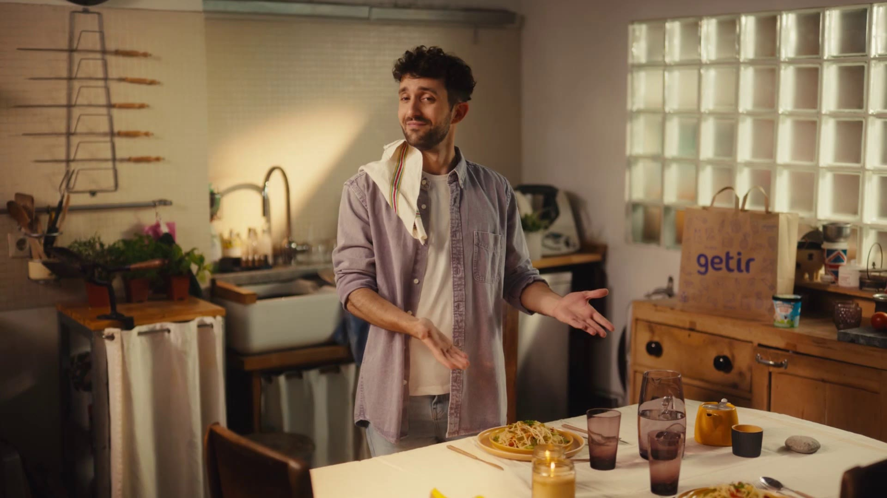
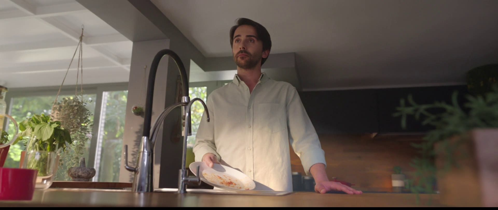

page 01/60
У нас с вами 7 роликов и две смены, поэтому в тритменте я больше сконцентрируюсь на технической составляющей по оптимизации производства. Ведь нам нужно успеть в этом объеме не потерять выразительность каждой отдельной истории и общую стилистику на всю кампанию. И для этого перед каждым скриптом я сделал по заметке с подходом к реализации.
director’s treatment
Оптимальнее всего по камере будет использовать классический юмористический подход, когда мы решаем историю через каты, без сложных движений. Монтаж строится за счет последовательного повествования, в котором для раскрытия каждой детали есть свое время, чтобы мы предвосхищали появление того или иного трюка в кадре. К примеру, не сразу видим, как у героини вырастают крылья, а сначала показываем реакцию мальчика, на лицо которого постепенно падает большая тень.
Lado Kvataniya
page 04/60
В наших роликах отсутствуют завалы по теням, и изображение решено преимущественно на средних и ярких тонах. Каждая история стилистически рифмуется с другой, но с небольшими изменениями: к примеру в автобусе выстраиваем более розоватое освещение мягкого закатного солнца, в офисах у нас более нейтральный свет, а на натуре приближен к золотому часу.
Во второй истории давайте откажемся от вылета героини через люк, и решим эту виньетку исключительно внутри автобуса. Разместим там качели, а вся трансформация на “седьмое небо от счастья” будет происходить по фону за окнами - для этого разместим за ними хромакей.
Она сдержанно хихикает, словно старается быть незаметной для остальных пассажиров.
Через объектив на аналоговом зуме разобщаемся. В кадре появляются золотистые качельные цепи. Переходим на общий план и видим - девушка сидит на качелях в центре автобуса, а фон за стеклами меняется с городского на розовато-облачный. Остальные пассажиры не обращают на это внимание, создаем атмосферу, что это тихое счастье только нашей героини. Солнечный свет заполняет пространство автобуса.
ГЗК: Вы на 7-м небе от счастья, когда у зарубежного стендапера теперь можно поучиться шуткам – ведь он болтает по-русски!


Парень - 30 лет. Программист, который работает из дома. Занимается своими рутинными делами и даже не замечает, что у него гигантские джинсы. Хочется с ним показать момент “бытового счастья”, когда происходит маленькая радость в повседневной рутине, и ты продолжаешь делать обычные дела, но чуть счастливее. Сам типаж героя ироничный, это веселый харизматик с добрым лицом.